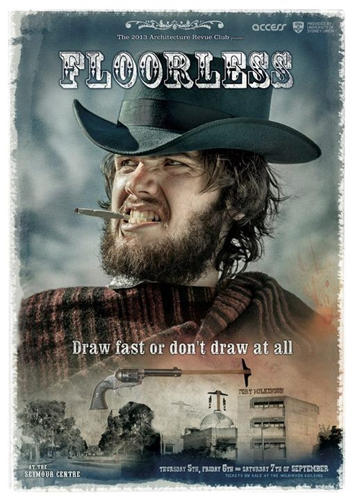
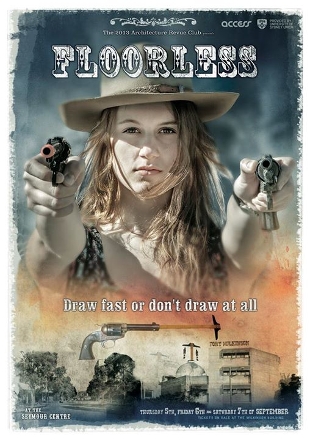

As some might remember, I was involved in a Sydney revue last year by the university of Sydney architecture faculty as the musical director. It was called Game of Homes (a shameless pun on the Game of Thrones series). Not only was I involved with music, it also gave me the wonderful opportunity to create a 3D animation for its opening sequence based on the original (and very well done) Game of Thrones sequence. You can view the animation sequence and corresponding revue poster in this post.
As this is an annual event, I'm happy to say that I'm again involved in it this year (as music again) and would like to present Floorless, a spaghetti western with a particularly complex pun for a title. It's a joke on both the film Lawless, and on Flawless with an architectural twist. Get it? Nope? That's alright. Me neither.

Anyway, you can tell that this is a quality Sydney revue because it has a quality poster. This means that if you're in Sydney on the 5th, 6th or 7th of September, you should buy a cheap ticket and watch it.

It contains all the right ingredients for a successful western. These include bandits, sherrifs, the town stranger, the town drunk, the fastest shot in the West (which may sometime be the town drunk), the banjo brandishing hillbilly, the lonely harmonica player, a whip*, the mayor, Mexicans, the fine lass, and a Final standoff with capital F.
Also, there used to be an official revue website somewhere but as I can't find it I assume that someone forgot to renew the domain and the site no longer exists.
Cheers, and see you at the event!
- the whip may or may not be used at the actual event, and audience are recommended to not buy tickets for the front row.